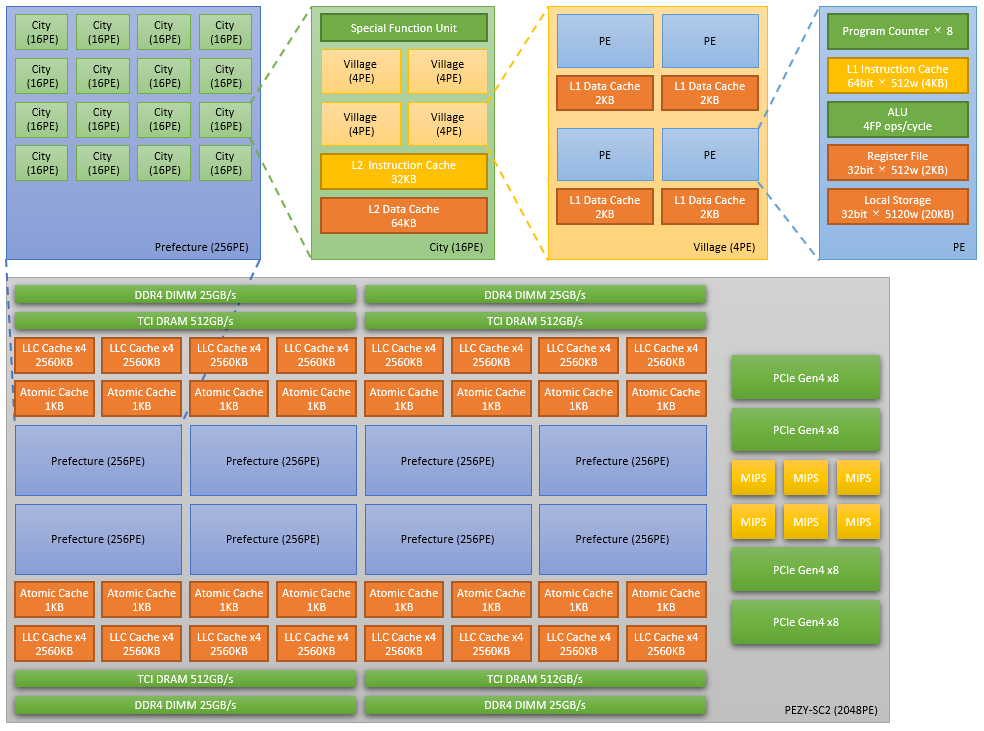

PEZY-SC2 Specification¶
overview¶
Fig. 3 shows block diagram of PEZY-SC2.

Fig. 4 PEZY-SC2 Block Diagram.
Remarks:
- One special function unit (SFU) is installed in each City to calculate division, modulo, square root, and inverse of the square root.
- PEZY-SC2 can use the MAD (Multiply-Add; d = a + b * c) instruction; MAD is addition and multiplication. Unlike the FMA (Fused-Multiply-Add) instruction, the MAD rounds the result of the multiplication. PE performs the MAD by running the adder and multiplier at the same time.
- PEZY-SC2 processor supports 64-bit SIMD instructions. It can compute one double-precision operation, two single-precision operations, or four half-precision operations simultaneously.
- Each PE has 2 KB L1 data cache, and each City has 64 KB L2 data cache. Each Prefecture has 5 MB LLC (Last Level Cache), and the LCCs of each Prefecture are connected by an X-bar.
- L1 Data Cache and L2 Data Cache DO NOT take hardware coherency (for more detail).
- Table2 shows the synchronization levels of PEZY-SC2.
| Synchronization level | Processor structure | City | PE | Thread | Cache | Kernel functions |
|---|---|---|---|---|---|---|
| Level 5: Processor level | 8 Prefectures / State | 128 Cities | 2048 PEs | 16384 | L1/L2/LLC | sync(), flush() |
| Level 4: Prefecture level | 16 Cities / Prefecture | 16 Cities | 256 PEs | 2048 | L1/L2/LLC | |
| Level 3: City level | 4 Villages / City | 1 City | 16 PEs | 128 | L1/L2 | sync_L2(), flush_L2() |
| Level 2: Village level | 4 PEs / Village | 4 PEs | 32 | L1 | sync_L1(), flush_L1() |
|
| Level 1: PE level | 8 Threads / PE | 1 PE 8 Threads | 8 | |||
| Level 0: Thread group level | 4 Threads / PE | 1 PE 4 Threads [0-3|4-7] | 4 |
Cache memory¶
The PEZY-SC2 processor has three-layer hierarchical structure cache; L1 Dcache, L2 Dcache, L1 Icache, L2 Icache, and LLC.
Table3 shows cache memory configratiion of PEZY-SC2.
| Attribute | L1 DCahe | L2 DCache | L1 ICache | L2 ICache | LastLevelCache(LLC) | Atomic Cache |
|---|---|---|---|---|---|---|
| Size (Chip Total) | 2k byte (4M byte) | 64k byte (8M byte) | 4k byte (8M byte) | 32k byte (4M byte) | 512 + 128K byte (32 + 8M byte) | 1k byte (16k byte) |
| WAY | 8 | 16 | 8 | 4 | 16 + 4 | 4 |
| Line size | 64 byte | 256 byte | 128 byte | 256 byte | 1024 byte | 256 byte |
Atomic operations¶
PEZY-SC2 supports atomic operations.
Atomic cache DO NOT take hardware coherency. In order to read / write data in atomic cache to / from global memory, it is necessary to synchronize at the software layer with functions such as pz_atomic_flush().
It is almost same as atomic functions of OpenCL 1.2: Atomic Functions in OpenCL 1.2